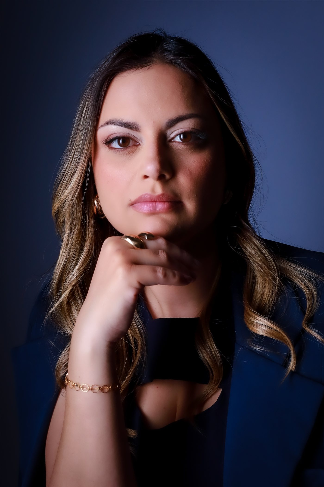
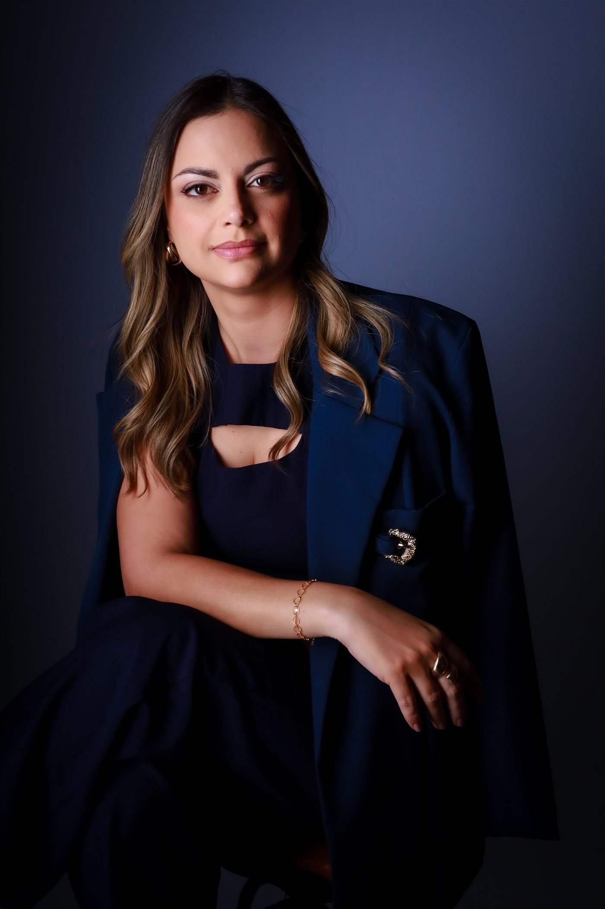

Pareceres técnicos e laudos periciais com rigor científico e documental, para advogados, magistrados, empresas e órgãos públicos — em Uberlândia e em todo o Brasil.

Atendimento a pessoas físicas ou jurídicas que são parte em um processo judicial ou administrativo e precisam de um parecer médico fundamentado para instruir o caso.
A RA Consultoria Médica e Pericial presta serviços especializados em perícia médica judicial e assistência técnica em processos judiciais e administrativos. Laudos periciais e pareceres técnicos fundamentados em evidências científicas, rigor técnico e princípios éticos da prática médica.
Dra. Rafaela Andrade reúne formação em cirurgia geral e trauma, com trajetória em medicina legal e formação específica em perícias médicas.
Ver currículo completo na Plataforma Lattes →
Elementos que fundamentam a credibilidade técnica do trabalho pericial.
Agilidade em análises processuais e prazo definido na assinatura do contrato.
Avaliação preliminar da documentação para verificar se o caso do reclamante tem fundamento técnico-médico.
Consultar condiçõesAnálise técnica completa da documentação e demais elementos necessários à avaliação pericial e acompanhamento dos atos processuais do início ao fim.
Consultar condiçõesDocumentação enviada por WhatsApp ou e-mail.
Avaliação da documentação e, se necessário, agendamento de perícia presencial.
Definição da abordagem técnica mais adequada ao caso.
Redação do laudo ou parecer, fundamentado em evidências científicas.
Entrega da documentação e acompanhamento dos atos processuais, dentro do prazo acordado.
As condições comerciais variam conforme a complexidade do caso, a extensão da documentação e a necessidade de deslocamento para perícia presencial — por isso cada caso é tratado de forma individual, com todas as condições apresentadas por escrito antes da assinatura do contrato.
O prazo é definido por escrito no ato da assinatura do contrato, considerando a complexidade do caso e a extensão da documentação. Há opção de urgência mediante sobretaxa, a combinar conforme o caso.
No primeiro contato, envie nome completo, telefone, e-mail e um breve resumo do caso. A partir dessas informações, cada caso é avaliado individualmente, e a documentação específica — autos do processo, laudos, exames e demais documentos de suporte — é solicitada na sequência, conforme o serviço contratado.
O atendimento presencial é feito em Uberlândia e região. Para o restante do território nacional, a atuação é remota, com análise da documentação e elaboração de laudos e pareceres. Há possibilidade de acompanhamento da perícia presencial por outro médico ou pela própria Dra. Rafaela, com valores a combinar.